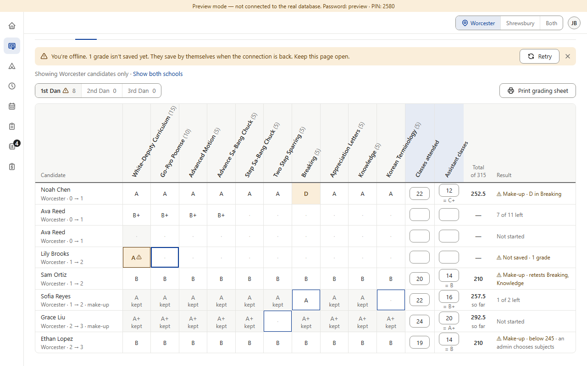
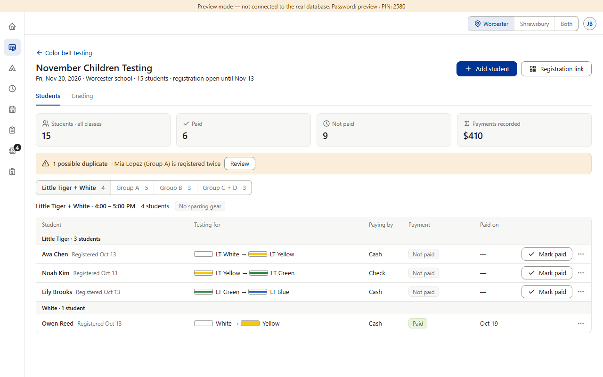
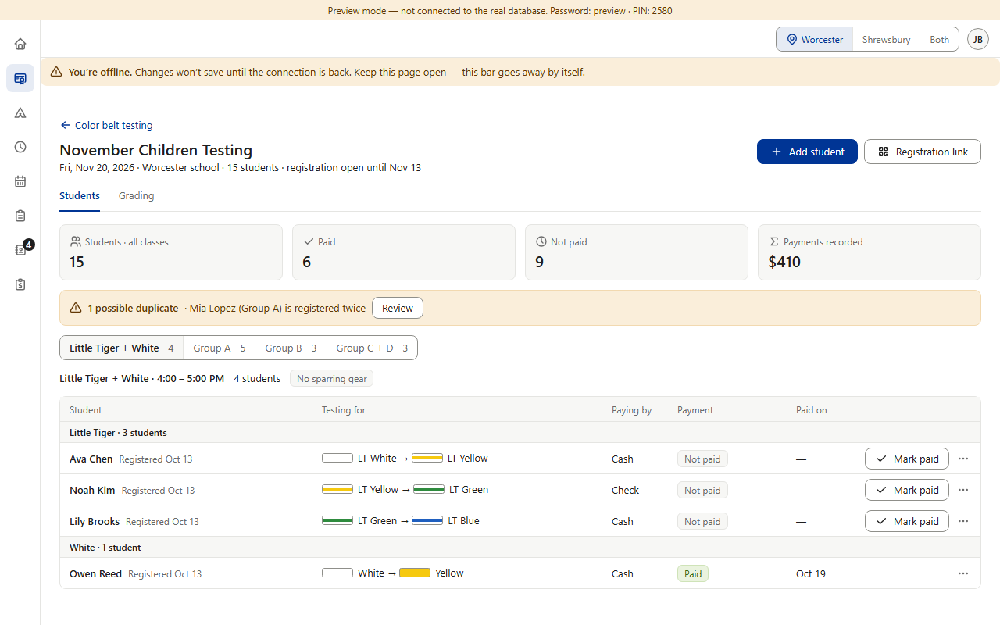

Missing — not planned. Rule §3.5 asks for an offline bar on every screen; only Star's grading page has one (v0.513). Everywhere else the page keeps showing the last thing it loaded — the 15-second refresh fails quietly, which was approved for the live lists (v0.157) — so a dropped connection only shows when a save fails. Camps' camp page alone adds “Couldn't refresh the roster” after two failed refreshes (v0.718). (Preview screenshots at PC size with the hidden browser's network cut · fake data)
Today · network cut

1. Star grading: “You're offline. 1 grade isn't saved yet. They save by themselves when the connection is back. Keep this page open.” — and the cell is marked.

2. Color Belt (Black Belt, Finance, Prospects, Calendar… the same): the same cut network, and nothing on screen says so. The Grandmaster finds out only when a Mark paid fails.
Camps is the one exception: after two failed refreshes in a row the camp page shows “Couldn't refresh the roster. Check the connection, then retry.” (the preview can't fake that, so it isn't pictured).
Proposed (option B) · one offline bar, every page

3. One amber bar under the top bar, on every page, while the device is offline (or after two failed refreshes in a row, Camps' rule). It goes away by itself when the connection is back.
Copies what's already there: the shared amber bar and Star's approved offline words. Star's grading keeps its own line naming the grades not saved yet; Camps' refresh bar becomes this one. Rule §3.5 promises “changes will sync when reconnected”, but nothing waits to sync outside Star grading — so the rule's words change to match (saving check-ins while offline is item 20). Picture 3 is drawn over the real page; nothing in the app was changed.
Your choice — one question: A · Keep as today.+ no work. − on most pages a Wi-Fi drop is invisible until something fails to save. B · Recommended: one offline bar for the whole dashboard. At the top of every page while offline (or after two failed refreshes in a row), gone by itself when the connection is back. + he always knows; one shared piece (Main session) instead of each section building its own. − a new shared part; Camps' refresh bar folds into it. C · Camps' refresh bar on every live page only.+ reuses the newest pattern. − appears only after about 30 seconds, and pages without automatic refresh never warn.